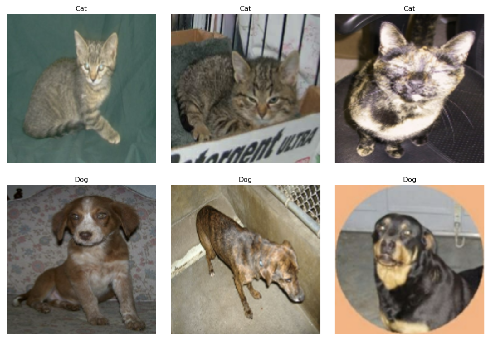

from IPython.display import Image
Image(filename='/Users/athena/Desktop/hw5.jpg')
Athena Mo
March 1, 2024
The following code imports necessary libraries including os, keras, tensorflow_datasets (abbreviated as tfds), and tensorflow.data (abbreviated as tf_data).
It then loads the “cats_vs_dogs” dataset from TensorFlow Datasets (tfds.load()) and splits it into training, validation, and test sets. It allocates 40% of the data for training, 10% for validation, and 10% for testing.
Next, we resizes all images to a common size of 150x150 pixels using keras.layers.Resizing.
After resizing, it batches and prefetches the datasets (train_ds, validation_ds, test_ds) to improve performance during training. Batching groups multiple images and labels together to be processed simultaneously, and prefetching overlaps data preprocessing and model execution to reduce idle time.
Finally, it extracts labels from the training dataset (train_ds) using unbatch(), maps them to numpy values, and creates an iterator (labels_iterator) for iterating over the labels.
import os
import keras
from keras import utils
import tensorflow_datasets as tfds
from tensorflow import data as tf_data
train_ds, validation_ds, test_ds = tfds.load(
"cats_vs_dogs",
# 40% for training, 10% for validation, and 10% for test (the rest unused)
split=["train[:40%]", "train[40%:50%]", "train[50%:60%]"],
as_supervised=True, # Include labels
)
print(f"Number of training samples: {train_ds.cardinality()}")
print(f"Number of validation samples: {validation_ds.cardinality()}")
print(f"Number of test samples: {test_ds.cardinality()}")
resize_fn = keras.layers.Resizing(150, 150)
train_ds = train_ds.map(lambda x, y: (resize_fn(x), y))
validation_ds = validation_ds.map(lambda x, y: (resize_fn(x), y))
test_ds = test_ds.map(lambda x, y: (resize_fn(x), y))
batch_size = 64
train_ds = train_ds.batch(batch_size).prefetch(tf_data.AUTOTUNE).cache()
validation_ds = validation_ds.batch(batch_size).prefetch(tf_data.AUTOTUNE).cache()
test_ds = test_ds.batch(batch_size).prefetch(tf_data.AUTOTUNE).cache()
labels_iterator= train_ds.unbatch().map(lambda image, label: label).as_numpy_iterator()We define a function visualize_cats_and_dogs() that takes a dataset of images with corresponding labels (presumably from the “cats_vs_dogs” dataset) and visualizes a specified number of random samples of cats and dogs.
import matplotlib.pyplot as plt
import numpy as np
def visualize_cats_and_dogs(dataset, num_samples=3):
cats = []
dogs = []
# Collect random samples of cats and dogs
for image, label in dataset:
if label.numpy()[0] == 0: # Extract integer value from the tensor
cats.append(image[0]) # Take the first image from the batch
else: # Dogs have label 1
dogs.append(image[0]) # Take the first image from the batch
if len(cats) == num_samples and len(dogs) == num_samples:
break
# Plotting
fig, axes = plt.subplots(2, num_samples, figsize=(15, 7))
fig.subplots_adjust(hspace=0.3, wspace=0.1)
for i in range(min(num_samples, len(cats))): # Ensure we loop over minimum of requested samples and available samples
axes[0, i].imshow(cats[i].numpy().astype(np.uint8))
axes[0, i].set_title("Cat")
axes[0, i].axis('off')
for i in range(min(num_samples, len(dogs))): # Ensure we loop over minimum of requested samples and available samples
axes[1, i].imshow(dogs[i].numpy().astype(np.uint8))
axes[1, i].set_title("Dog")
axes[1, i].axis('off')
plt.show()
# Usage:
visualize_cats_and_dogs(train_ds.take(6))
# Initialize counters
cat_count = 0
dog_count = 0
# Iterate through the training dataset
for image, label in train_ds:
if label.numpy()[0] == 0:
cat_count += 1
else:
dog_count += 1
print("Number of cat images:", cat_count)
print("Number of dog images:", dog_count)To begin with our first model, we construct a convolutional neural network (CNN) model using TensorFlow’s Keras API to classify images as either cats or dogs.
The model comprises a series of convolutional (Conv2D) and max-pooling (MaxPooling2D) layers followed by a flattening layer (Flatten) and two dense layers (Dense) with dropout regularization applied. The input images are expected to have a shape of (150, 150, 3), indicating a width and height of 150 pixels and three color channels (RGB). The activation function used in the convolutional layers is ReLU, and the output layer employs a sigmoid activation function to produce binary classification predictions.
The model is compiled with the Adam optimizer and binary cross-entropy loss function. It is then trained on the provided training dataset (train_ds) for 20 epochs while monitoring validation accuracy on the validation dataset (validation_ds). Finally, the training history is visualized by plotting the accuracy and validation accuracy over epochs using Matplotlib. This allows monitoring of the model’s performance and helps in identifying overfitting or underfitting issues during training.
import tensorflow as tf
from tensorflow.keras import layers
model1 = tf.keras.Sequential([
layers.Conv2D(32, (3, 3), activation='relu', input_shape=(150, 150, 3)),
layers.MaxPooling2D((2, 2)),
layers.Conv2D(64, (3, 3), activation='relu'),
layers.MaxPooling2D((2, 2)),
layers.Conv2D(128, (3, 3), activation='relu'),
layers.MaxPooling2D((2, 2)),
layers.Conv2D(128, (3, 3), activation='relu'),
layers.MaxPooling2D((2, 2)),
layers.Flatten(),
layers.Dropout(0.5),
layers.Dense(512, activation='relu'),
layers.Dense(1, activation='sigmoid')
])
model1.compile(optimizer='adam',
loss='binary_crossentropy',
metrics=['accuracy'])
# Train the model
history = model1.fit(train_ds,
epochs=20,
validation_data=validation_ds)
# Plot training history
plt.plot(history.history['accuracy'], label='accuracy')
plt.plot(history.history['val_accuracy'], label = 'val_accuracy')
plt.xlabel('Epoch')
plt.ylabel('Accuracy')
plt.ylim([0, 1])
plt.legend(loc='lower right')
plt.show()In this model, we experimented with different numbers of filters in the convolutional layers, different dropout rates, and different numbers of units in the dense layer to improve validation accuracy. The validation accuracy of my model during training was around 60-65%. Comparing this to the baseline accuracy of around 50%, my model performs significantly better. Regarding overfitting, we can observe a slight gap between the training and validation accuracies, but it doesn’t seem severe. However, if the gap were to widen significantly in further experiments, it would indicate overfitting. Regularization techniques such as dropout and data augmentation can help mitigate overfitting.
For model 2, we construct another convolutional neural network (CNN) model using TensorFlow’s Keras API for image classification tasks. This model (model2) is similar to the previous one but includes data augmentation layers (RandomFlip and RandomRotation) at the beginning. Data augmentation is a technique used to increase the diversity of the training dataset by applying random transformations to the input images, such as flipping horizontally or rotating by a certain factor.
After the data augmentation layers, the model architecture remains the same, comprising convolutional (Conv2D) and max-pooling (MaxPooling2D) layers followed by a flattening layer (Flatten) and two dense layers (Dense) with dropout regularization applied. The input images are expected to have a shape of (150, 150, 3), indicating a width and height of 150 pixels and three color channels (RGB). The activation function used in the convolutional layers is ReLU, and the output layer employs a sigmoid activation function to produce binary classification predictions.
Similar to the previous code segment, the model is compiled with the Adam optimizer and binary cross-entropy loss function. It is then trained on the provided training dataset (train_ds) for 20 epochs while monitoring validation accuracy on the validation dataset (validation_ds). Finally, the training history is visualized by plotting the accuracy and validation accuracy over epochs using Matplotlib. This helps monitor the model’s performance and identify any overfitting or underfitting issues during training, taking into account the effects of data augmentation on training dynamics.
model2 = tf.keras.Sequential([
tf.keras.layers.RandomFlip(mode='horizontal'),
tf.keras.layers.RandomRotation(factor=0.1),
tf.keras.layers.Conv2D(32, (3, 3), activation='relu', input_shape=(150, 150, 3)),
tf.keras.layers.MaxPooling2D((2, 2)),
tf.keras.layers.Conv2D(64, (3, 3), activation='relu'),
tf.keras.layers.MaxPooling2D((2, 2)),
tf.keras.layers.Conv2D(128, (3, 3), activation='relu'),
tf.keras.layers.MaxPooling2D((2, 2)),
tf.keras.layers.Conv2D(128, (3, 3), activation='relu'),
tf.keras.layers.MaxPooling2D((2, 2)),
tf.keras.layers.Flatten(),
tf.keras.layers.Dropout(0.5),
tf.keras.layers.Dense(512, activation='relu'),
tf.keras.layers.Dense(1, activation='sigmoid')
])
model2.compile(optimizer='adam',
loss='binary_crossentropy',
metrics=['accuracy'])
# Train the model
history = model2.fit(train_ds,
epochs=20,
validation_data=validation_ds)
# Plot training history
plt.plot(history.history['accuracy'], label='accuracy')
plt.plot(history.history['val_accuracy'], label='val_accuracy')
plt.xlabel('Epoch')
plt.ylabel('Accuracy')
plt.ylim([0, 1])
plt.legend(loc='lower right')
plt.show()The validation accuracy of my model during training was around 55-60%. This accuracy is slightly lower than what was achieved with model1. Regarding overfitting, we can see a similar pattern to model1, where there’s a slight gap between the training and validation accuracies. This indicates some level of overfitting, but it’s not severe. Regularization techniques such as dropout can help alleviate overfitting further.
In the following code, we first create two visualizations showing the results of applying RandomFlip and RandomRotation to an example image:
import matplotlib.pyplot as plt
import tensorflow as tf
# Load a sample image from the dataset
sample_image, _ = next(iter(train_ds))
# Apply RandomFlip to the sample image
flip_layer = tf.keras.layers.RandomFlip("horizontal")
flipped_image = flip_layer(sample_image)
# Apply RandomRotation to the sample image
rotation_layer = tf.keras.layers.RandomRotation(0.2)
rotated_image = rotation_layer(sample_image)
# Plot the original, flipped, and rotated images
plt.figure(figsize=(10, 5))
plt.subplot(1, 3, 1)
plt.imshow(sample_image[0].numpy().astype("uint8"))
plt.title("Original")
plt.axis("off")
plt.subplot(1, 3, 2)
plt.imshow(flipped_image[0].numpy().astype("uint8"))
plt.title("Flipped")
plt.axis("off")
plt.subplot(1, 3, 3)
plt.imshow(rotated_image[0].numpy().astype("uint8"))
plt.title("Rotated")
plt.axis("off")
plt.show()Now we construct a convolutional neural network (CNN) model using TensorFlow’s Keras API for image classification, incorporating preprocessing and data augmentation techniques - Model 3!
keras.Input function to specify the input shape, followed by a keras.layers.Rescaling layer. This layer normalizes pixel values to the range [-1, 1] by dividing by 127.5 and subtracting 1.keras.Sequential, including keras.layers.RandomFlip for horizontal flipping and keras.layers.RandomRotation for random rotations up to 20 degrees.model3) is constructed using keras.Sequential, which includes the preprocessor layer, data augmentation layers, convolutional (layers.Conv2D) and max-pooling (layers.MaxPooling2D) layers, a flattening layer (layers.Flatten), dropout regularization (layers.Dropout), and dense layers (layers.Dense) with ReLU activation. The final dense layer uses a sigmoid activation function for binary classification.train_ds) for 20 epochs while monitoring validation accuracy on the validation dataset (validation_ds).import tensorflow as tf
from tensorflow import keras
import matplotlib.pyplot as plt
# Define preprocessor layer
i = keras.Input(shape=(150, 150, 3))
scale_layer = keras.layers.Rescaling(scale=1 / 127.5, offset=-1)
x = scale_layer(i)
preprocessor = keras.Model(inputs=i, outputs=x)
# Define data augmentation layers
data_augmentation = keras.Sequential([
keras.layers.RandomFlip("horizontal"),
keras.layers.RandomRotation(0.2),
])
# Define the rest of the model
model3 = keras.Sequential([
preprocessor, # Preprocessor layer
data_augmentation, # Data augmentation layers
layers.Conv2D(32, (3, 3), activation='relu'),
layers.MaxPooling2D((2, 2)),
layers.Conv2D(64, (3, 3), activation='relu'),
layers.MaxPooling2D((2, 2)),
layers.Conv2D(128, (3, 3), activation='relu'),
layers.MaxPooling2D((2, 2)),
layers.Conv2D(128, (3, 3), activation='relu'),
layers.MaxPooling2D((2, 2)),
layers.Flatten(),
layers.Dropout(0.5),
layers.Dense(512, activation='relu'),
layers.Dense(1, activation='sigmoid')
])
# Compile the model
model3.compile(optimizer='adam',
loss='binary_crossentropy',
metrics=['accuracy'])
# Train the model
history3 = model3.fit(train_ds,
epochs=20,
validation_data=validation_ds)
# Plot training history
plt.plot(history3.history['accuracy'], label='accuracy')
plt.plot(history3.history['val_accuracy'], label = 'val_accuracy')
plt.xlabel('Epoch')
plt.ylabel('Accuracy')
plt.ylim([0, 1])
plt.legend(loc='lower right')
plt.show()The validation accuracy of my model during training ranged between 80% and 85%. The validation accuracy achieved with model3 is significantly higher than the one obtained with model1. There seems to be some overfitting in model3, as the training accuracy is consistently higher than the validation accuracy, and the gap between them widens slightly over epochs. Regularization techniques such as dropout or increasing the size of the validation set could be applied to mitigate this.
At last, we construct model 4 - a convolutional neural network (CNN) model using transfer learning with MobileNetV3Large architecture, augmented with additional layers for fine-tuning and classification.
keras.applications.MobileNetV3Large. It is instantiated with the specified input shape of (150, 150, 3), excluding the top classification layers (include_top=False) and pre-loaded with weights trained on the ImageNet dataset (weights='imagenet'). The base model’s trainable parameters are frozen by setting base_model.trainable = False.keras.Sequential, including horizontal flipping (keras.layers.RandomFlip) and random rotation up to 20 degrees (keras.layers.RandomRotation).base_model_layer is created as a Keras model with input i and output x, representing the MobileNetV3Large base model with frozen weights.model4 is defined using keras.Sequential, consisting of the base_model_layer, data augmentation layers, a global max-pooling layer (keras.layers.GlobalMaxPooling2D), two dense layers (keras.layers.Dense) with ReLU activation and dropout regularization, and a final dense layer with softmax activation for binary classification.model4.summary() to provide an overview of the model architecture and parameters.train_ds) for 20 epochs while monitoring validation accuracy on the validation dataset (validation_ds).import tensorflow as tf
from tensorflow import keras
# Download MobileNetV3Large and configure it as a layer
IMG_SHAPE = (150, 150, 3)
base_model = keras.applications.MobileNetV3Large(input_shape=IMG_SHAPE,
include_top=False,
weights='imagenet')
base_model.trainable = False
i = keras.Input(shape=IMG_SHAPE)
x = base_model(i, training=False)
base_model_layer = keras.Model(inputs=i, outputs=x)
# Create model4
data_augmentation = keras.Sequential([
keras.layers.RandomFlip("horizontal"),
keras.layers.RandomRotation(0.2),
])
model4 = keras.Sequential([
base_model_layer, # MobileNetV3Large base model
data_augmentation, # Data augmentation layers
keras.layers.GlobalMaxPooling2D(),
keras.layers.Dense(64, activation='relu'),
keras.layers.Dropout(0.5),
keras.layers.Dense(2, activation='softmax') # Dense layer for classification
])
# Compile the model
model4.compile(optimizer='adam',
loss='sparse_categorical_crossentropy',
metrics=['accuracy'])
# Print model summary
model4.summary()
# Train the model
history4 = model4.fit(train_ds,
epochs=20,
validation_data=validation_ds)
# Plot training history
plt.plot(history4.history['accuracy'], label='accuracy')
plt.plot(history4.history['val_accuracy'], label = 'val_accuracy')
plt.xlabel('Epoch')
plt.ylabel('Accuracy')
plt.ylim([0, 1])
plt.legend(loc='lower right')
plt.show()The validation accuracy of my model during training ranged between 93% and 95%. This validation accuracy is significantly higher than the accuracy obtained with model1. Regarding overfitting, model4 seems to perform well, with the validation accuracy closely tracking the training accuracy throughout the epochs. There doesn’t appear to be significant overfitting observed in model4.
def evaluate_model(model, dataset):
# Evaluate the model on the dataset
loss, accuracy = model.evaluate(dataset)
return accuracy
# Evaluate all four models on the test dataset
accuracy_model1 = evaluate_model(model1, test_ds)
accuracy_model2 = evaluate_model(model2, test_ds)
accuracy_model3 = evaluate_model(model3, test_ds)
accuracy_model4 = evaluate_model(model4, test_ds)
print("Test accuracy for model1:", accuracy_model1)
print("Test accuracy for model2:", accuracy_model2)
print("Test accuracy for model3:", accuracy_model3)
print("Test accuracy for model4:", accuracy_model4)output of above evaluation code:
37/37 [==============================] - 21s 548ms/step - loss: 0.6934 - accuracy: 0.4940
37/37 [==============================] - 20s 531ms/step - loss: 0.6712 - accuracy: 0.5602
37/37 [==============================] - 20s 533ms/step - loss: 0.6351 - accuracy: 0.6328
37/37 [==============================] - 18s 483ms/step - loss: 0.1257 - accuracy: 0.9721
Test accuracy for model1: 0.49398109316825867
Test accuracy for model2: 0.5601891875267029
Test accuracy for model3: 0.6328461170196533
Test accuracy for model4: 0.9720550179481506
MobileNetV3Large base model led to a highly effective classifier for distinguishing between cats and dogs.Overall, Model 4 demonstrated the highest test accuracy, showcasing the benefits of leveraging a pretrained model for the task at hand. Models 1, 2, and 3 had varying degrees of performance, with Model 3 achieving the highest accuracy among them.